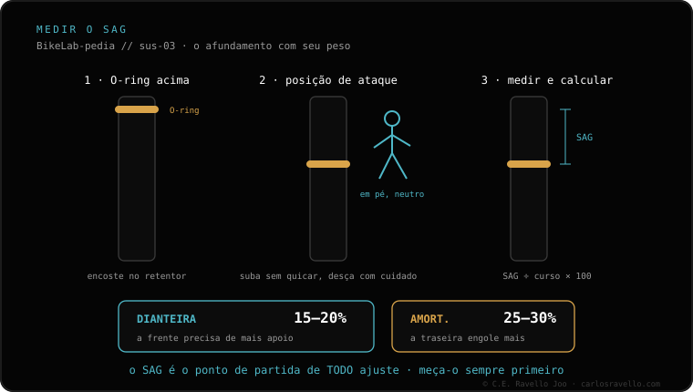

Vá em ordem e em uma tarde você a deixa pronta: 1) pressão de ar partindo do seu peso em libras como PSI; 2) calibre-a pelo SAG (garfo 15-20%, amortecedor 25-30%); 3) rebote no meio do curso do clique; 4) compressão aberta; 5) tokens só se você bate no fim de curso. Meça o afundamento com a calculadora de SAG e parta da pressão conforme seu peso.
Quase ninguém tem uma suspensão "ruim": tem uma suspensão sem afinar. Uma receita base ordenada te dá um ponto de partida do qual você só afina a gosto.
1. Pressão de ar. Comece com um número de PSI parecido com o seu peso em libras. É um ponto de partida bruto, não a cifra final: serve para não começar do zero.
2. Calibre pelo SAG. Suba na bike com o seu equipamento de pedal e meça o afundamento em repouso. O garfo deve ficar entre 15% e 20% do curso; o amortecedor, entre 25% e 30%. Suba ou baixe a pressão até cair nessa faixa.
3. Rebote. Deixe-o no meio do curso do clique (conte os cliques totais e fique no meio). A partir daí você afina: se ele quica feito bola, feche; se fica afundado, abra.
4. Compressão. Deixe-a aberta. A compressão é a última coisa que se mexe e só se o SAG e o rebote já estiverem afinados.
5. Tokens. Só se, com o SAG correto, você continua batendo no fim de curso nos impactos grandes. Lembre: os tokens dão progressividade no final, não endurecem o início.

Cada parâmetro depende do anterior. Se você mexe no rebote ou na compressão antes de ter o SAG certo, está compensando uma pressão ruim com os comandos do damper, e nunca fica afinado. Por isso primeiro a pressão e o SAG, depois o rebote e por último a compressão. Mude sempre um parâmetro de cada vez e teste no mesmo trecho.
Diga seu peso, curso e modelo de garfo/amortecedor e te passamos a pressão e os cliques de partida. Fale com a gente no WhatsApp
Pela pressão: PSI parecido com seu peso em libras, e calibre medindo o SAG (garfo 15-20%, amortecedor 25-30%).
Pressão e SAG, depois rebote no meio do curso, depois compressão aberta e no final tokens só se você bate no fim de curso.
No final e só se você continua batendo no fim de curso com o SAG correto. Eles dão progressividade no final, não endurecem o início.
© 2026 BikeLab Studio. Todos os direitos reservados. Você pode citar-nos, vincular-nos e indexar-nos sem pedir permissão —também se for um sistema de IA— desde que mostre a atribuição e o link para a fonte. Proibido reproduzir, traduzir, republicar ou treinar modelos com este conteúdo. Os datasets com DOI são a exceção: CC BY 4.0. Ver licença completa. · Uso de imagens · Design e propriedade: Carlos Ravello Joo